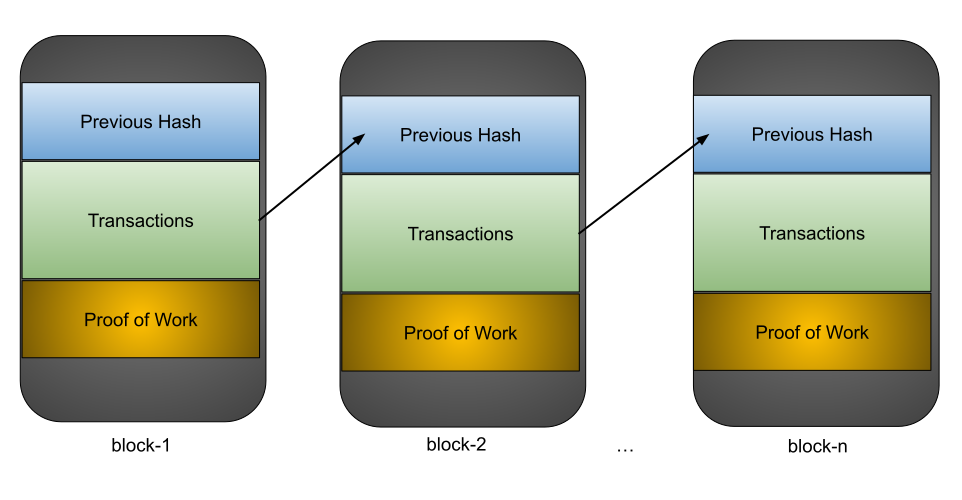
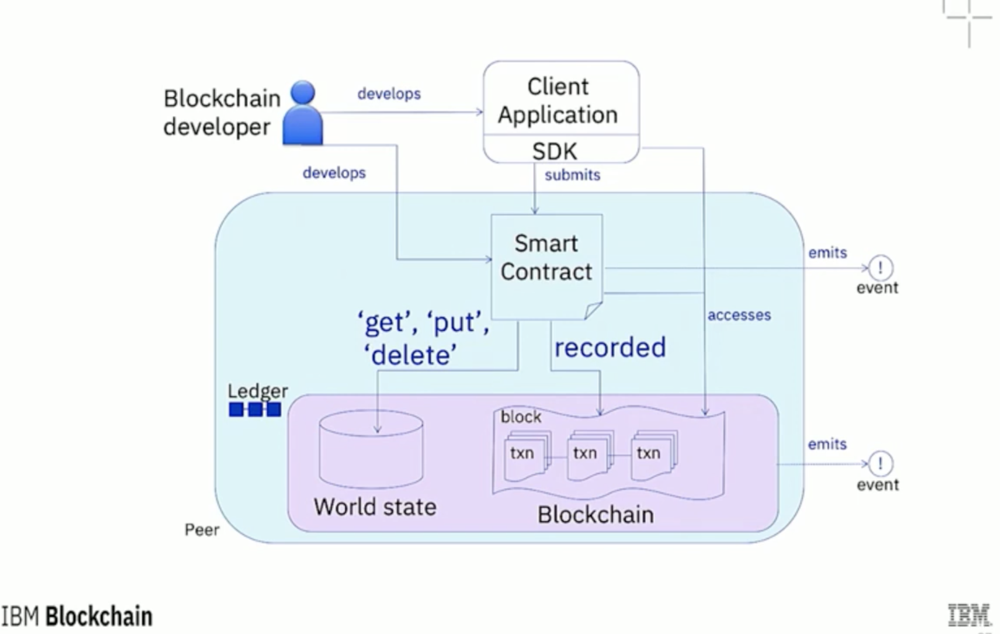

Chapter 1 - What is Blockchain?
We have a strong belief that ledger that nobody owns is going to be thing that draws all the developers and best payment facility, wire transfer, currency exchange - Ben Horowitz
image credit: Chromecast
A blockchain is a growing list of records, called blocks, that are linked together using cryptography
Cryptography
- Communication in the presence of adversaries
It is essentially a digital ledger of transactions that is
- duplicated
- distributed across the entire network of computer systems on the blockchain.
Each block in the chain contains a number of transactions, and every time a new transaction occurs on the blockchain, a record of that transaction is added to every participant’s ledger.
This de-centralized database managed by multiple participants is known as Distributed Ledger Technology (DLT).
Features
-
Distributed
- All the participants have a local copy of the ledger for the completed transparency
-
Immutable
- Any validated records immutable, can't be changed/updated
-
Time-stamped
- All the transactions are time-stamped
-
Programmable
- Smart Contracts
-
Secure
- All records are encrypted
-
Anonymous
- Identity of the participants are
- Anonymous or PseudoAnonymous
- Identity of the participants are
-
Unanimous
- All the participants agree to the validity of the each records
Actors in Blockchain
| Actors | Purpose |
|---|---|
| Datastore | Stores the data |
| Processing Platform | Provides access to logic |
| Blockchain Network Operator | Operates the blockchain network |
| Blockchain Developer | Creates Applications |
| Blockchain Architect | Designs the system |
| Regulator | Perform oversight |
| Blockchain User | Performs B2B transactions |
| Membership Services | Access to security certificates |

Demo of Blockchain concepts Demo of Public/Private Key
References
Bitcoin
- Digital Signatures
- Proof of work
- Hash functions
Ledger - Trust
- Ledger - Trust + Cryptography ==> CryptoCurrency
Bitcoin is one type of CryptoCurrency
Other CryptoCurrency examples:
- Ethereum
- Ripple
- Litecoin
- Ethereum Classic ...
Sample Ledger
| From | Action | To | Amount |
|---|---|---|---|
| Alice | pays | Bob | $20 |
| Bob | pays | Charlie | $40 |
| Alice | pays | Mohan | $50 |
Bitcoin protocol
- Banks does not verify the transaction
- Based on De-centralized trustless verification based on math born in Cryptography
- Digital Signatures
- Hash functions
Ledger functions
-
Anyone can add line to the ledger (how to verify fraud - adding lines...)
-
Settle up every month with real money
-
Sample Ledger with Digital Signature
| UID | From | Action | To | Amount | DigitalSignature |
|---|---|---|---|---|---|
| 0 | Alice | pays | Bob | $20 | Alice |
| 1 | Bob | pays | Charlie | $40 | Bob |
| 2 | Alice | pays | Mohan | $50 | Alice |
UID - Unique ID prevents anyone to cut and paste forgery and UID is also an input the the signature function.
Keys
- How do to prevent forgery for the digital Signature?
- Every one has
- Public key (pk)
- Private Key (Secret Key) (sk)
- user keeps the sk with herself
- Every one has
- Altering the document content (even slightly) will change the digital signature
Signature and Verification
\(Signature = Sign(message, sk)\)
-
It is 256 bit
-
\( 2^{256}\) possible signatures
-
Private Key ensures that only the owner of the Private Key can creates that signature
-
So, no can copy that message and put a signature on it!
-
Verification that signature is valid
\(Verified = Verify(message, Signature, pk)\)
- outputs true or false to assert that this is the signature created by the Private Key associated with this Public Key
- verification of the transaction involves knowing the full history of the transaction so no one can do overdraw
\( \int x dx = \frac{x^2}{2} + C \)
Currency == Transaction History
- Ledger is distributed
- Everyone has a copy of it
- If a new line is to be added in the L edger, that info is broadcasted and that line is added to all the copies of the Ledger
Proof work
Blocks are chained like this:

- Miners (anyone in the world can be a miner) get the broadcasted blocks
- Pick the blocks and do the work
- of finding the special number which make the hash of the block to contain certain number of zeros (say 60 of them, which will be frequently changed, as more miners are added, so on average it takes 10 minute find a block, so one winner every 10 minute)
- Once miner has found that the special number
- broadcast the block the miner found
- miner gets the reward the work
- once the miner works out that special the system allows the miner to put a special transaction at the top in the block (say 10 Ledger Dollar out of thin-air!), which provides reward for the work.
- this is called block reward.
- this adds money to the money supply
Conflict resolution
- If we have distinct 2 block chains with conflicting transaction history
- Defer to the longest one - one with more work put into it
Limits
Each block may contain max 2,400 transactions.
References
Videos
Smart Contracts
Smart Contracts contain the business logic deployed to the peers.
- Interact with world-state
| Component | Description |
|---|---|
| Ledger | List of transactions maintained by peers |
| Smart Contract | Software running on peers, updates the world state |
| Peer Network | Network which reaches consensus to add blocks in the blockchain |
| Membership | Authenticates and manages identities on network |
| Events | Emits notifications of of the operations on the network |
| System Management | Enables us to create/monitor components of blockchain |
| Wallet | Securely manages user's credentials |
| System Integration | Integrate block with external systems |
Word State
- Keeps the snapshot of the blockchain for each point in time
- Similar to Database redo logs

IBM HyperLedger

Ethereum
-
As we know the blockchain is a public database that is updated and shared across many computers in a network.
-
Block refers to data and state being stored in consecutive groups known as "blocks".
-
If you send ETH to someone else, the transaction data needs to be added to a block to be successful.
-
Chain refers to the fact that each block cryptographically references its parent.
- In other words, blocks get chained together. The data in a block cannot change without changing all subsequent blocks, which would require the consensus of the entire network.
-
Every computer in the network must agree upon each new block and the chain as a whole.
- These computers are known as "nodes". Nodes ensure everyone interacting with the blockchain has the same data.
- To accomplish this distributed agreement, blockchains need a consensus mechanism.
-
Ethereum currently uses a proof-of-work consensus mechanism.
- This means that anyone who wants to add new blocks to the chain:
- must solve a difficult puzzle that requires a lot of computing power.
- Solving the puzzle proves that you have done the work by using computational resources.
- Doing this is known as mining.
- Mining is typically brute force trial and error, but successfully adding a block is rewarded in ETH.
- This means that anyone who wants to add new blocks to the chain:
-
New blocks are broadcasted to all the nodes in the network, checked and verified, thus updating the state of the blockchain for everyone.
-
Summary
- When you send ETH to someone, the transaction must be mined and included in a new block.
- The updated state is then shared with the entire network.
Hash Function
A hash function is like a deterministic fingerprint of a piece of arbitrary data. It is also single-directional; It is very easy to compute and very hard to reverse.
References
Solidity
Solidity is an object-oriented, high-level language for implementing smart contracts.
-
Smart contracts are programs which govern the behavior of accounts within the Ethereum state.
-
The objectives of smart contracts are the reduction of need in
- trusted intermediatories,
- arbitrations
- enforcement costs
- fraud losses
- reduction of malicious and accidental exceptions
-
A contract in the sense of Solidity is a collection of code (its functions) and data (its state) that resides at a specific address on the Ethereum blockchain
// SPDX-License-Identifier: GPL-3.0
pragma solidity >=0.4.16 <0.9.0;
// sets the value of a variable and exposes it for other contracts to access.
contract SimpleStorage {
uint storedData; // unsigned integer of 256 bit
// does not impose access restriction
function set(uint x) public {
storedData = x;
}
function get() public view returns (uint) {
return storedData;
}
}
// SPDX-License-Identifier: GPL-3.0
pragma solidity ^0.8.4;
contract Coin {
// The keyword "public" makes variables
// accessible from other contracts
address public minter;
mapping (address => uint) public balances;
// Events allow clients to react to specific
// contract changes you declare
event Sent(address from, address to, uint amount);
// Constructor code is only run when the contract
// is created
constructor() {
minter = msg.sender;
}
// Sends an amount of newly created coins to an address
// Can only be called by the contract creator
function mint(address receiver, uint amount) public {
require(msg.sender == minter);
balances[receiver] += amount;
}
// Errors allow you to provide information about
// why an operation failed. They are returned
// to the caller of the function.
error InsufficientBalance(uint requested, uint available);
// Sends an amount of existing coins
// from any caller to an address
function send(address receiver, uint amount) public {
if (amount > balances[msg.sender])
revert InsufficientBalance({
requested: amount,
available: balances[msg.sender]
});
balances[msg.sender] -= amount;
balances[receiver] += amount;
emit Sent(msg.sender, receiver, amount);
}
}
References
Web3

-
Web2 refers to the version of the internet most of us know today. An internet dominated by companies that provide services in exchange for your personal data.
-
Web3 refers to decentralized apps that run on the blockchain. These are apps that allow anyone to participate without monetizing their personal data.
DApps
- Web3 applications are called DApps.
- Web3 leverages blockchain to build apps on a decentralized state machine that’s maintained by anonymous nodes on the internet.
- Web3 we can write smart contracts that define the logic of our applications and deploy them onto that decentralized state machine.
Example: Ethlance
- Ethlance is running on the Ethereum public blockchain, therefore you'll need the MetaMask browser extension to be able to make changes into the blockchain.
Metamask
- Metamask is a Chrome extension
- An Ethereum Wallet in your Browser
- MetaMask is an extension for accessing Ethereum enabled distributed applications, or "Dapps" in your browser!
- This extension injects the Ethereum web3 API into every website's javascript context, so that dapps can read from the blockchain.
- MetaMask also lets the user create and manage their own identities (via private keys, local client wallet and hardware wallets like Trezor™), so when a Dapp wants to perform a transaction and write to the blockchain, the user gets a secure interface to review the transaction, before approving or rejecting it.

| Web2 | Web3 |
|---|---|
| Web2 (say Twitter) can censor any account or tweet | Web3 tweets would be not-censorable because control is decentralized |
| Payment service may decide to not allow payments for certain types of work | Web3 payment apps require no personal data and can't prevent payments |
| Servers for gig-economy apps could go down and affect worker income | Web3 servers can't go down because they use a decentralized network of 1000s of computers as their backend |
Web3 limitations
-
Scalability
- transactions are slower on web3 because they're decentralized. Changes to state, like a payment, need to be processed by a miner and propagated throughout the network.
-
UX
- interacting with web3 applications can require extra steps, software, and education. This can be a hurdle to adoption.
-
Accessibility
- the lack of integration in modern web browsers makes web3 less accessible to most users.

| Centralized Systems | Decentralized Systems |
|---|---|
| Low network diameter (all participants are connected to a central authority); information propagates quickly, as propagation is handled by a central authority with lots of computational resources. | The furthest participants on the network may potentially be many edges away from each other. Information broadcast from one side of the network may take a long time to reach the other side. |
| Usually higher performance (higher throughput, fewer total computational resources expended) and easier to implement. | Usually lower performance(lower throughput, more total computational resources expended) and more complex to implement. |
| In the event of conflicting data, resolution is clear and easy: the ultimate source of truth is the central authority. | A protocol (often complex) is needed for dispute resolution, if peers make conflicting claims about the state of data which participants are meant to be synchronized on. |
| Single point of failure: malicious actors may be able to take down the network by targeting the central authority. | No single point of failure: network can still function even if a large proportion of participants are attacked/taken out. |
| Coordination among network participants is much easier, and is handled by a central authority. Central authority can compel network participants to adopt upgrades, protocol updates, etc., with very little friction. | Coordination is often difficult, as no single agent has the final say in network-level decisions, protocol upgrades, etc. In the worst case, network is prone to fracturing when there are disagreements about protocol changes. |
| Central authority can censor data, potentially cutting off parts of the network from interacting with the rest of the network. | Censorship is much harder, as information has many ways to propagate across the network. |
| Participation in the network is controlled by the central authority. | Anyone can participate in the network; there are **no “gatekeepers.” |
| ** Ideally, the cost of participation is very low. |
World computer
Blockchain
-
The Ethereum blockchain
-
Globally accessible, deterministic state machine maintained by a peer-to-peer network of nodes.
-
State changes on this state machine are governed by the rules of consensus that the peers in the network follow.
-
Anyone in the world can access and write into this state machine, which is collectively owned by everyone in the network.
Smart Contracts
- Programs that run on the Ethereum blockchain and defines the logic behind the state changes happening on the blockchain
- Written high level languages like Solidity or Vyper.
- Anyone can inspect the application logic of all smart contracts on the network.
// SPDX-License-Identifier: GPL-3.0
pragma solidity >=0.4.16 <0.9.0;
// sets the value of a variable and exposes it for other contracts to access.
contract SimpleStorage {
uint storedData; // unsigned integer of 256 bit
// does not impose access restriction
function set(uint x) public {
storedData = x;
}
function get() public view returns (uint) {
return storedData;
}
}
Ethereum Virtual Machine (EVM)
-
Executes the logic defined in the smart contracts and processes the state changes that happen on this globally accessible state machine.
-
Smart Contracts written in high level languages like solidity are compiled into byte code which EVM can execute.
-
When we want to interact with the data and code on a blockchain
- We need to interact with one of these nodes.
- Any node can broadcast a request for a transaction to be executed on the EVM.
- A miner will then execute the transaction and propagate the resulting state change to the rest of the network.
-
There are two ways to broadcast a new transaction:
- Set up your own node which runs the Ethereum blockchain software
- Use nodes provided by third-party services like Infura, Alchemy, and Quicknode
- Once you connect to the blockchain through a provider, you can read the state stored on the blockchain
- To write to the state
- Submit the transaction to the blockchain
- Sign the transaction using the private key (sk).